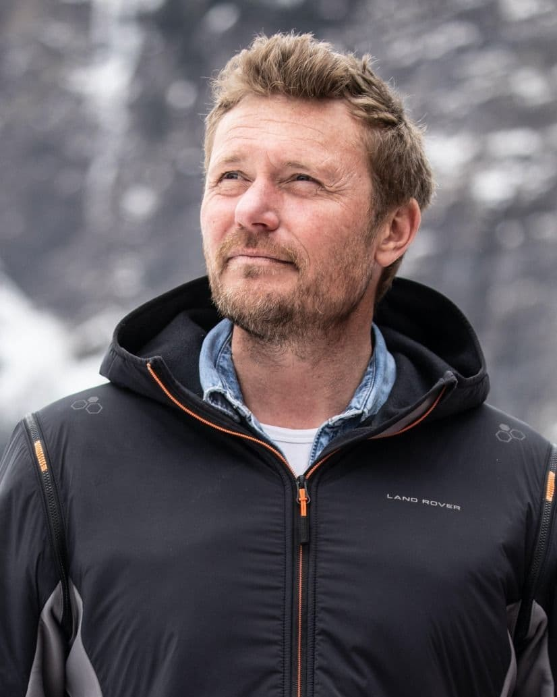

ALBAN MICHON
édition 2026


présentation
Alban Michon
DOMAINE : EXPLORATION POLAIRE
Alban Michon, Troyen d’origine et Aubassadeur est explorateur polaire et spécialiste de la plongée sous glace et en milieux confinés. Moniteur de plongée depuis 1999, il a dirigé plusieurs écoles de plongée sous glace et souterraine en France.
Il a ensuite mené des expéditions majeures : 45 jours au pôle Nord, 51 jours au Groenland en kayak et 62 jours en solitaire sur le passage du Nord-Ouest dans le grand nord Canadien.
Il fonde ensuite l’École des Explorateurs à Tignes, un centre d’entraînement dédié aux environnements extrêmes, aux tests technologiques et aux programmes scientifiques.
Auteur et documentariste, il développe aujourd’hui BIODYSSEUS, une future station de recherche sous-marine, dédiée à la recherche sur le climat, à l’océanographie et à l’adaptation humaine.